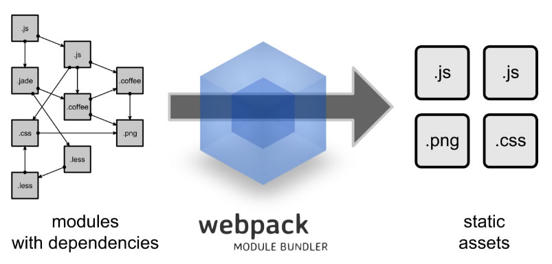
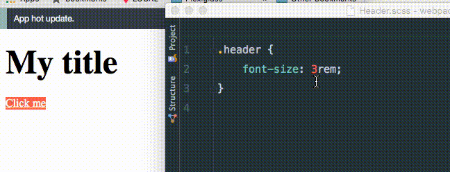

name: inverse layout: true class: center, middle, inverse --- #Webpack初探 [ alextang @ 2016.05 ] --- ## Webpack 是啥? ---  --- layout: false .left-column[ ## What is it? ] .right-column[ - 构建工具 - 模块打包 - 基于性能优化的资源合并 ] --- .left-column[ ## Why use it? ] .right-column[ - 原始时代 - 场景简单，依赖约定的命名规则 - 库时代 - 复杂度增加, Combo，依赖命名空间 - 模块化时代 - `requirejs，seajs, modulejs` ] --- .left-column[ ## Why use it? ] .right-column[ - 一切皆是模块 - 支持AMD、CommonJS - 根据依赖打包 - 专注性能的打包 - 专注于模块化编程 ] --- template: inverse # 初现峥嵘 --- - Require: `node npm ` - Setup: `npm i webpack -g` - cats.js: ```js var cats = ['dave', 'henry', 'martha']; module.exports = cats; ``` - app.js(entry): ```js cats = require('./cats.js'); console.log(cats); ``` --- - run cmd: ```js > webpack ./app.js bundle.js > node bundle.js ``` - show result: ```js > ["dave", "henry", "martha"] ``` --- ## 基本配置 - package.js - `npm init` - webpack.config.js ```js const webpack = require('webpack'); module.exports = { entry: './src/app.js', output: { path: './build', filename: 'bundle.js', } } ``` --- - 目录规划 ``` webpackDemo ├─build ├─src │ ├─index.html │ ├─index.less │ ├─index.js │ └─componentes ├─package.json └─webpack.config.js ``` --- template: inverse # 渐入佳境 --- ## Loaders ### 一切皆模块，不同模块使用对应的Loader，如： - babel-loader将es6的模块转换为es5模块 - style-loader, css-loader 处理样式模块 - url-loader, file-loader 处理图片 - 。。。 --- ##loaders - babel - Setup: ``` npm install babel-loader --save-dev npm install babel-core babel-preset-es2015 --save-dev ``` - Config: ``` module.exports = { entry: './src', output: { path: 'build', filename: 'bundle.js', }, module: { loaders: [ { test: /\.jsx?$/, * loader: 'babel?presets[]=es2015', include: __dirname + '/src', } ], } }; ``` --- ##在模块中使用ES6语法: ``` import $ from 'jquery'; $('body').html('Hello'); ``` --- ##loaders - style, css - Setup: ``` npm install style-loader css-loader --save-dev ``` - Config: ``` { test: /\.css$/, loader: 'style!css' }, ``` --- ##loaders - style, css - 像引入其他模块一样引入css模块： ``` require('./style.css') //or with ES6 syntax import './style.css' ``` - `style!css`先将模块通过css-loader载入，然后通过style-loader将样式载入到页面中 --- ##loaders - url, file - Setup: ``` npm install url-loader file-loader --save-dev ``` - Config: ``` { test: /\.(png|gif|jpe?g|svg)$/i, loader: 'url?limit=10000', }, ``` --- ##loaders - url, file - file-loader, 返回资源的URL - url-loader, 将资源转码为base64编码 - `url?limit=10000`，如果资源小于10kb，就转为base64编码内嵌到页面；否则就使用外链的图片 --- ##Chunks Load resource on demand for Performance - `require.ensure`的callback中的代码会分离到一个新的chunk中，当需要的时候会自动异步载入到页面 ``` if (document.querySelectorAll('a').length) { require.ensure([], () = { const Button = require('./Components/Button'); const button = new Button('qq.com'); button.render('a'); }); } if (document.querySelectorAll('div.header').length) { require.ensure([], () = { const Button = require('./Components/Header'); new Button('qq.com').render() ; }); } ``` --- ##Chunks result: ``` $ webpack --display-modules --display-chunks ...... chunk {0} bundle.js (main) 550 bytes [rendered] [0] ./src/index.js 550 bytes {0} [built] chunk {1} 1.bundle.js 290 kB {0} [rendered] [1] ./src/Components/Button.js 1.94 kB {1} [built] [2] ./~/jquery/dist/jquery.js 259 kB {1} {2} [built] [3] ./src/Components/Button.html 72 bytes {1} [built] [4] ./~/mustache/mustache.js 19.4 kB {1} {2} [built] [5] ./src/Components/Button.scss 1.05 kB {1} [built] [6] ./~/css-loader!./~/sass-loader!./src/Components/Button.scss 212 bytes {1} [built] [7] ./~/css-loader/lib/css-base.js 1.51 kB {1} {2} [built] [8] ./~/style-loader/addStyles.js 7.21 kB {1} {2} [built] chunk {2} 2.bundle.js 290 kB {0} [rendered] [2] ./~/jquery/dist/jquery.js 259 kB {1} {2} [built] [4] ./~/mustache/mustache.js 19.4 kB {1} {2} [built] [7] ./~/css-loader/lib/css-base.js 1.51 kB {1} {2} [built] [8] ./~/style-loader/addStyles.js 7.21 kB {1} {2} [built] [9] ./src/Components/Header.js 1.62 kB {2} [built] [10] ./src/Components/Header.html 64 bytes {2} [built] [11] ./src/Components/Header.scss 1.05 kB {2} [built] [12] ./~/css-loader!./~/sass-loader!./src/Components/Header.scss 192 bytes {2} [built] ``` --- template: inverse # 游刃有余 --- ## Webpack-dev-server LiveReload, BrowserSync, HotModuleReload - Setup ``` npm install webpack-dev-server --save-dev ``` - 开启HMR模式，所写即所得 ``` webpack-dev-server --inline --hot ``` - `http://localhost:8080/webpack-dev-server/` --- ## Webpack-dev-server HMR  --- ## Plugins - UglifyJsPlugin ``` plugins: [ new webpack.optimize.UglifyJsPlugin({ compress: {warnings: false}, output: {comments: false}, }), ] ``` --- ## Plugins - CommonsChunkPlugin， 将重复模块抽取为公用模块 ``` plugins: [ new webpack.optimize.CommonsChunkPlugin({ name: 'main', children: true, minChunks: 2, }), ] ``` --- ##Plugins - CommonsChunkPlugin result: ``` chunk {0} bundle.js (main) 287 kB [rendered] [0] ./src/index.js 550 bytes {0} [built] * [2] ./~/jquery/dist/jquery.js 259 kB {0} [built] * [4] ./~/mustache/mustache.js 19.4 kB {0} [built] [7] ./~/css-loader/lib/css-base.js 1.51 kB {0} [built] [8] ./~/style-loader/addStyles.js 7.21 kB {0} [built] chunk {1} 1.bundle.js 3.28 kB {0} [rendered] [1] ./src/Components/Button.js 1.94 kB {1} [built] [3] ./src/Components/Button.html 72 bytes {1} [built] [5] ./src/Components/Button.scss 1.05 kB {1} [built] [6] ./~/css-loader!./~/sass-loader!./src/Components/Button.scss 212 bytes {1} [built] chunk {2} 2.bundle.js 2.92 kB {0} [rendered] [9] ./src/Components/Header.js 1.62 kB {2} [built] [10] ./src/Components/Header.html 64 bytes {2} [built] [11] ./src/Components/Header.scss 1.05 kB {2} [built] [12] ./~/css-loader!./~/sass-loader!./src/Components/Header.scss 192 bytes {2} [built] ``` --- name: last-page template: inverse ## That's all (for now)! by Alextang @ 2016.05